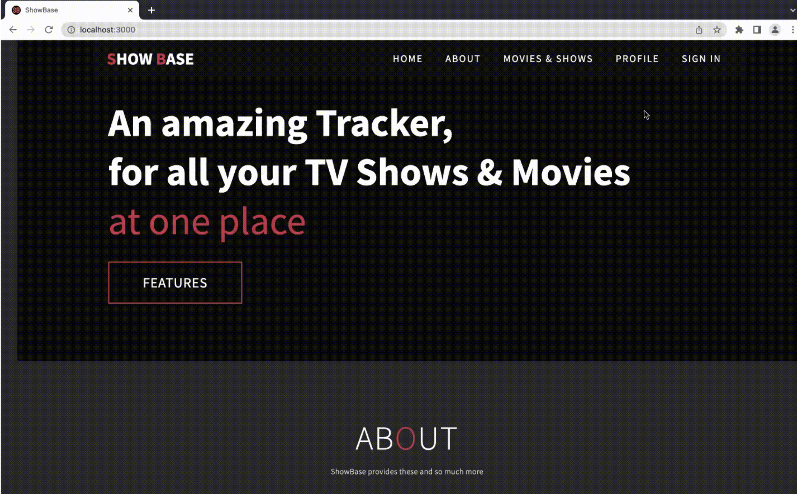
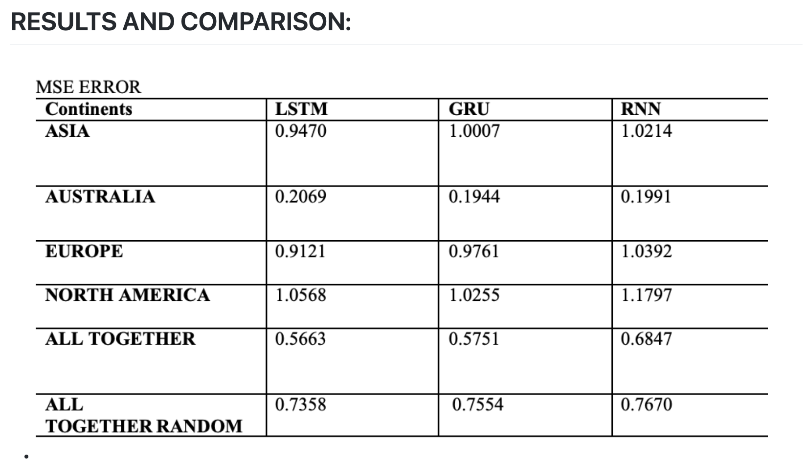
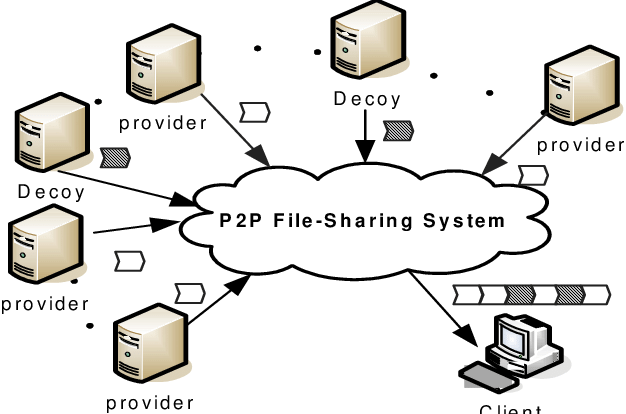
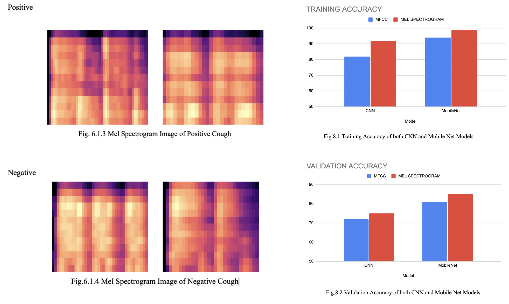

I am a passionate computer science graduate student at University of Florida with experience in software engineering, machine learning, data analysis and full stack development. I'm actively seeking full-time software development roles where I can apply my knowledge and experience to develop innovative solutions and make a meaningful impact.

Created a website that provides a tracking platform and social network for TV shows and movies using ReactJS for
frontend, GO language for backend and SQLite DB server for the database.
Developed functionalities for users to create an account, track shows, view movies in specific genres, add likes, follow
friends and be up to date with friends’ favorite shows. Working on this project gave me a good knowledge on web development and the use of different technologies.

Predicted the mutation rates in SARS-CoV-2 genomic sequences in the
near future using global and country-specific temporal genomic information. Implemented LSTM, RNN and GRU
models for time series prediction of the future mutation rate and analyzed and compared model performances based on loss rate and true mutation rate. This gave me a deep understanding of the machine learning models used to make predictions.

Implemented a peer-to-peer file sharing system in Java that uses the TCP/IP protocols, similar to the popular BitTorrent protocol. Additionally, I implemented choke and unchoke mechanisms to improve download speeds and increase efficiency. This gave me a understanding of both the technical details of file sharing and the underlying protocols used in these types of systems.

I developed an at-home tool that uses deep learning to detect Covid-19 by analyzing patient's cough audio samples. The tool utilizes Mel Spectrogram and MFCC feature extraction techniques to extract relevant features from the cough audio, and then uses a Convolutional Neural Networks (CNN) model to classify the extracted 2-D images into Covid-19 positive or negative.

Developed a research paper on a method for removing noise harmonics and random disturbances from ECG signals using a second-order cascaded multi-notch IIR filter, designed in MATLAB. The performance and characteristics of the filter were evaluated using ECG signals from the Physio Bank ATM database that were corrupted with added odd noise harmonics. The effectiveness of the filter was measured using noise parameters such as correlation with the original signal, Signal-to-Noise Ratio (SNR) and Root Mean Square Error (RMSE). This paper was presented in the 2020 International Conference on System, Computation, Automation and Networking (ICSCAN) and published in IEEE library.